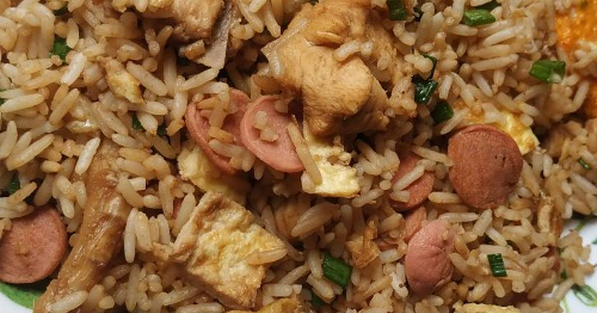
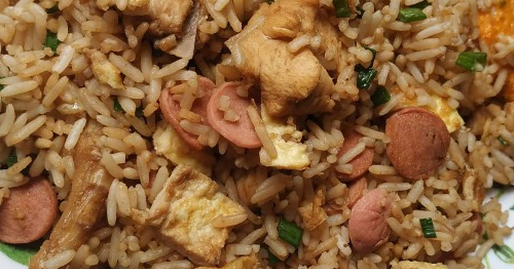

Ingredientes
- 1 kg de arroz
- 100 gramos de cebolla china picada
- 1 cda de ajo molido
- aceite de ajonjolí
- 1 cda de salsa de ostión
- Sillao
- Sal
- Pimienta
- Lomo fino o alguna carne de tu gusto
Utensilios
- Sartén
- Cuchillo
- Cuchara
- Cucharón
El arroz chaufa es un plato muy popular del Perú, pero su origen proviene de la cultura China, a lo largo de los años el arroz chaufa se ganó una gran popularidad en las mesas peruanas. Su preparación es bastante sencilla, básicamente freímos o tostamos un poco de arroz, le agregamos huevos, carnes picadas y otros ingredientes, eso es todo. Aunque esconde algunos secretos adicionales en su interior, así que no te pierdas esta receta paso a paso.
 



En el mes de Octubre manda la tradición limeña del Señor de los Milagros, llega momento de darse un dulce capricho y que mejor manera que hacerlo con unos deliciosos Picarones. Bueno, en la actualidad los Picarones se consumen en cualquier época del año y es en mi opinión el postre más alabado entre los peruanos.
 Sierra
Sierra
 Postre
Postre

Del mar el mero y de Perú el Pisco Sour, ¿no? Claro que sí, que vengan ya los cítricos, el ceviche, la leche de tigre y un viaje para el paladar sin salir de casa, ¿quién puede negarse? Igual que el margarita en México o la Caipirinha en Brasil, el Pisco abandera Perú celebrándose cada primer sábado de febrero el día oficial del Pisco Sour.
 Costa
Costa
 Bebidas
Bebidas

¿Eres de los que disfruta de un rico snack antes de comer? Entonces la receta de Chifles puede ser la que buscas. Deliciosas rodajitas de plátano verde, muy crujientes y doraditas, que van bien tanto solas como acompañadas. ¿Lo mejor de todo? Son increíblemente fáciles y rápidas de hacer. ¡Aprende hoy a prepararlas con nosotros!
 Selva
Selva
 Entrada
Entrada